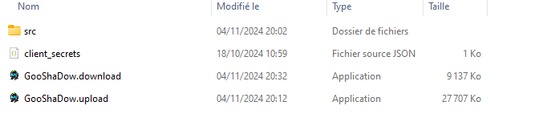
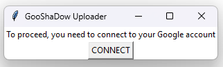
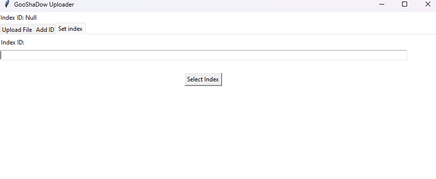
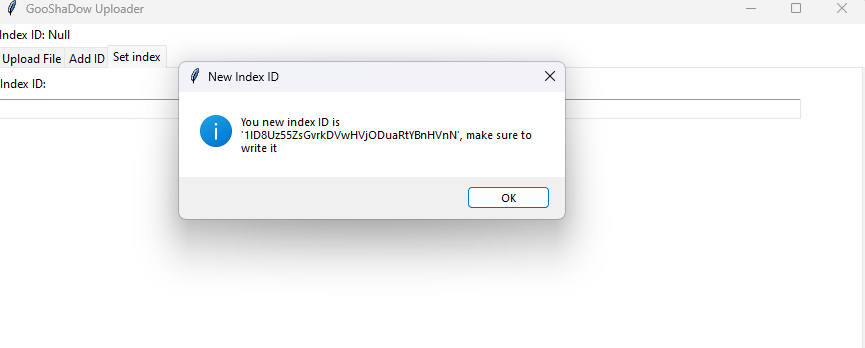
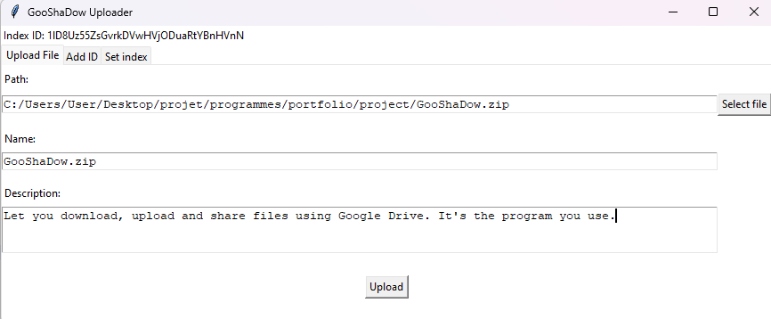
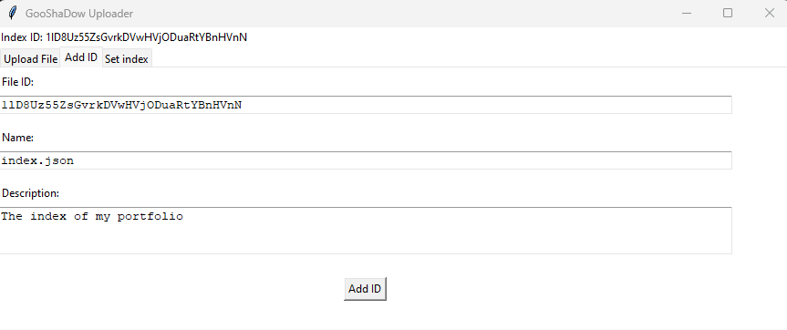

The goal of this page is to let you download one of my project, GooShaDow. This project will let you download other of my projects alongside their source code.
The executable of GooShaDow and my others projects are not signed because I haven't brought a trusted certificate so they can trigger your antivirus software,
but I promise you it's not a malware and you have my name and address on my resume to prove myself to you.
If you still doubt, you can test my program in a virtual machine and see that it is not dangerous and download the source code.
Those softwares and sources codes are given ASIF, so I have no responsibility about any problems or problematic usages done with my work.
No really, be careful, some of my softwares can be used to make dangerous or illegal stuffs.
My executables were compiled with auto-py-to-exe.
The icon was made with designer.microsoft.com.
You can download GooShaDow here.
To use the downloader of GooShaDow:
If you want create your own portfolio using GooShaDow, you can, but you will need a google secret file, you can create one here.
Once you have your client_secrets.json, place it in the same folder than GooShaDow.upload.exe.

Then, start the application and connect.

Once your are connected, you need to set your index. If you don't have one, just leave the entry empty, then click to "Select Index", it will create a new one, make sure to save its ID.


You can then upload a file from your computer or add an ID for a file already in google drive.


TODO HOW TO GIVE THE ID TO YOUR FRIENDS